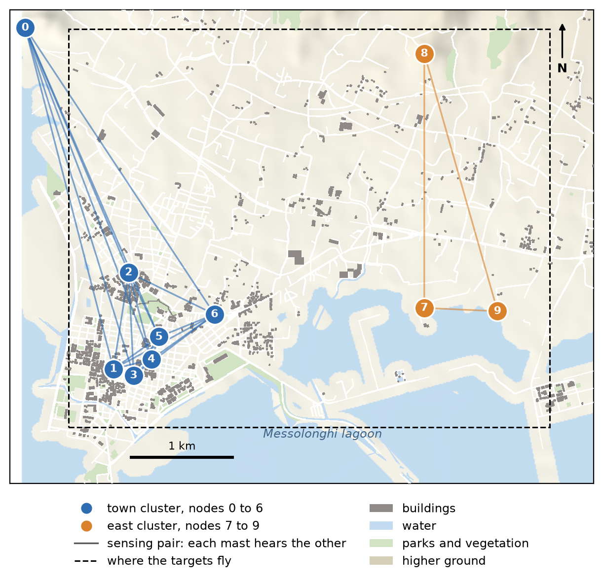
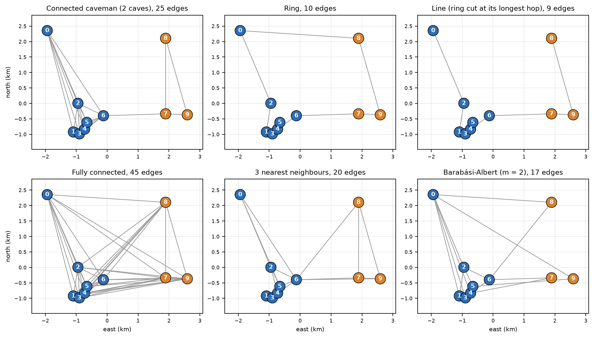
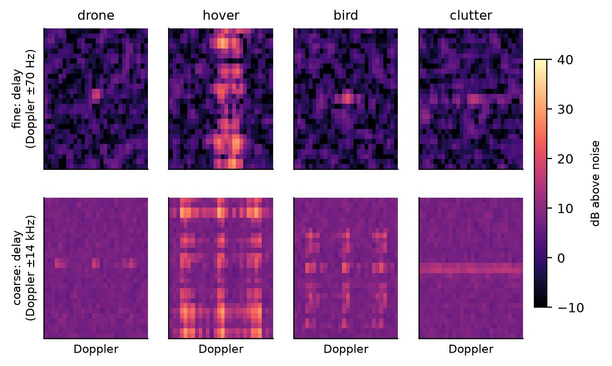
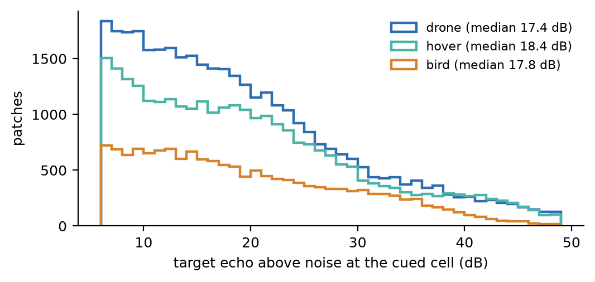
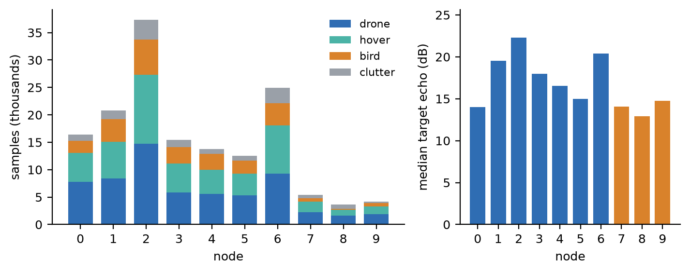

Range-Doppler dataset for decentralized and federated learning over 10 real masts
Ten licensed mobile masts in Messolonghi, each one a learning node. Every node keeps its own labelled radar patches (drone, hovering drone, bird, clutter) from bistatic ISAC sensing, simulated by ray tracing on a 3D model of the town.
What it is
The 10 nodes are the 10 licensed mobile masts of Messolonghi, Greece, at their real positions, from the public antenna registry. They form two geographic clusters ("caves"): the town (nodes 0 to 6) and the east (nodes 7 to 9). Inside a cave every ordered pair of masts is a bistatic sensing pair, 48 pairs in all.
Each run has one target flying anywhere over the masts' area (4.6 km × 3.8 km). Every look (200 ms), each receiving node stores patches around its detections, plus one patch cued at the true target cell when the target's own echo there is at least 6 dB above the noise. The data is non-IID by geometry and hardware, not by an artificial split.

Five masts are documented in EEAE studies (height, sector azimuths, antenna gain and beamwidths, power per sector): nodes 2, 5, 6, 8 and 9. The other five use a generic sensing panel (18 dBi, 64° × 6.5°) in 3 sectors, at 20 m and 8 W.
Communication graphs

graphs.json, all connected: caveman (2 caves, one bridge), ring, line, fully connected, 3 nearest neighbours, and Barabási-Albert (m = 2, seed 0).How the masts sense
- Simulator: Sionna RT 2.2 ray tracing, NR 3.5 GHz, 100 MHz carrier.
- Every mast transmits its sensing reference signal all the time on its own tenth of the carrier (9.8 MHz). A pair integrates the whole 200 ms look: Doppler bin 5 Hz, delay bin 30.6 m.
- Each mast has one steerable beam: a sector azimuth and one of 6 elevations (1° to 21°). In search it sweeps. When any pair of the cave detects the target, every mast of the cave points at the track estimate (true position of the previous look plus a 30 / 30 / 10 m error). Five looks without a detection and the cave searches again.
- Receivers form all beams digitally. The best beam toward the target is recorded.
- The zero-Doppler notch is the DC bin only, so a hovering drone is detectable once its drift reaches 1 Doppler bin.
- Every look is also synthesised without clutter and noise, which gives the target's own echo at the cued cell (
tgt_snr_db).
Classes
| y | class | model |
|---|---|---|
| 0 | drone | 3GPP small UAV, 5-15 m/s, 30-150 m altitude, rotor micro-Doppler |
| 1 | hover | same drone holding station (drift 0.3-1 m/s), 30-120 m. Body 1-3 bins from zero Doppler (median 10 Hz), so the rotor spread is what tells it apart |
| 2 | bird | 8-15 m/s, 20-120 m, RCS −30 to −16 dBsm, wings flapping ±40° at 3-8 Hz, no rotors |
| 3 | clutter | any detection not on the target, up to 3 per pair and look. Mostly isolated noise and residual-clutter peaks far from zero Doppler (median 6 kHz) |


Size and the per-node picture
| samples | 154,576 |
| drone / hover / bird / clutter | 62,646 / 51,420 / 26,429 / 14,081 |
| cued target patches (echo ≥ 6 dB) | 81,344 |
| detections (target / clutter) | 59,151 / 14,081 |
| train / val / test (108 / 36 / 36 runs) | 95,505 / 31,035 / 28,036 |
| runs | 180 (60 per target class), 40 looks each |

| node | cave | samples | drone / hover / bird / clutter % | cued | median echo |
|---|---|---|---|---|---|
| 0 | town | 16,385 | 47 / 33 / 13 / 7 | 10,341 | 14.0 dB |
| 1 | town | 20,833 | 40 / 32 / 20 / 8 | 10,849 | 19.5 dB |
| 2 | town | 37,326 | 40 / 34 / 17 / 10 | 17,387 | 22.3 dB |
| 3 | town | 15,479 | 38 / 34 / 19 / 9 | 7,584 | 17.9 dB |
| 4 | town | 13,807 | 41 / 32 / 21 / 7 | 7,724 | 16.5 dB |
| 5 | town | 12,552 | 42 / 31 / 19 / 7 | 7,334 | 15.0 dB |
| 6 | town | 24,902 | 37 / 35 / 16 / 11 | 11,713 | 20.4 dB |
| 7 | east | 5,395 | 41 / 37 / 11 / 11 | 3,464 | 14.0 dB |
| 8 | east | 3,688 | 43 / 29 / 6 / 22 | 2,294 | 12.9 dB |
| 9 | east | 4,209 | 44 / 34 / 13 / 8 | 2,654 | 14.7 dB |
Files (folder K10/)
nodes/nodeXX.npz, one per receiving node (111 MB in all):fineandcoarseuint8 [n, 28, 28], pixel to dB isdB = v/4 − 10(above the median noise, −10 to 53.75). Alsoy[n],split[n] (train / val / test),metafloat [n, 23] andmeta_names.graphs.json: undirected edge lists of the six graphs above. Drawn ingraphs_K10.png.nodes.json: position, cave, height, power, sector azimuths, antenna gain and beamwidths, documented flag, beam codebook and waveform parameters.summary.json: samples per node and class.
Meta columns
run, look, t_s, tx, rx, label, cued, target_detected, delay_bin, doppler_bin, doppler_hz, snr_db, bistatic_range_m, rx_target_range_m, tgt_x, tgt_y, tgt_z, tgt_snr_db, tracked, tx_sector, tx_el_deg, rx_sector, rx_el_deg
snr_db is the patch centre over the noise, whatever is there. tgt_snr_db is the target's own echo at the cued cell (−100 for clutter rows). tracked means the transmitter's cave was in track mode.
Points to note
- Split is by run (run mod 5 = 4 test, = 3 val, else train), so no look of a trajectory leaks across splits. Runs are 8 s tracks, so consecutive looks are strongly correlated.
- cued = 1 marks the patch at the true target cell. A detected target patch and the cued patch of the same look are near duplicates. For a detection-driven task use
cued == 0only (25,980 / 22,063 / 11,108 target patches plus 14,081 clutter). For one target patch per pair and look usecued == 1plus the clutter rows. - Subsets by echo (drone / hover / bird cued patches): ≥ 10 dB 29,600 / 23,866 / 12,587. ≥ 20 dB 14,936 / 13,059 / 6,605.
- Birds give fewer samples (median 172 per run against 893 for drones and 635 for hovers), since their echo is 15 to 30 dB weaker. Class weights or resampling are advised.
- The detector fired on 64% of cued drone and bird patches and 52% of hover ones. Caves were in track mode for 94% of the samples.
- For a label-skewed split on top of the geometric one, subsample per node.
Rotors and wings are point-scatterer models. The data suits an algorithm paper, not a claim about real-world classification accuracy.